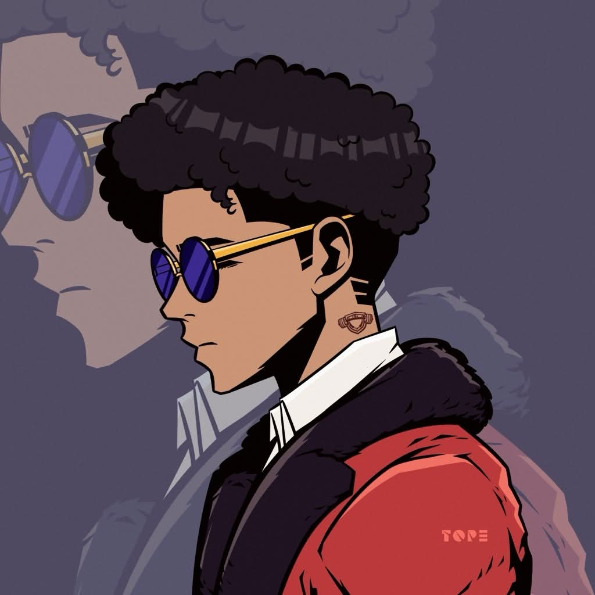
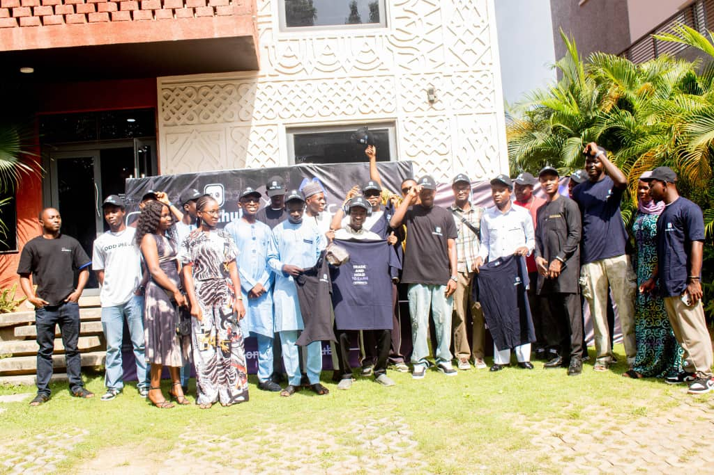
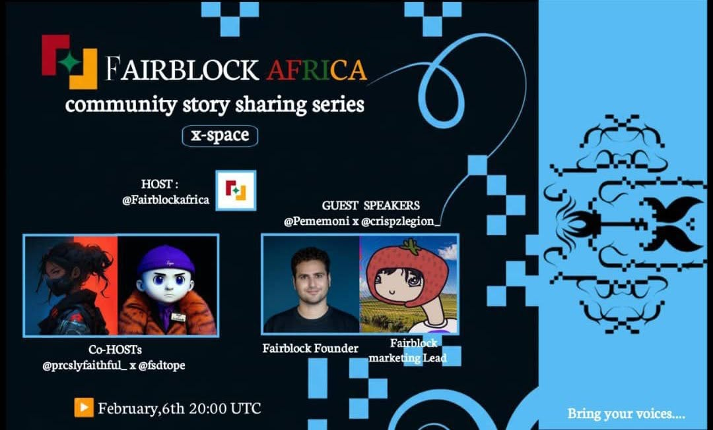
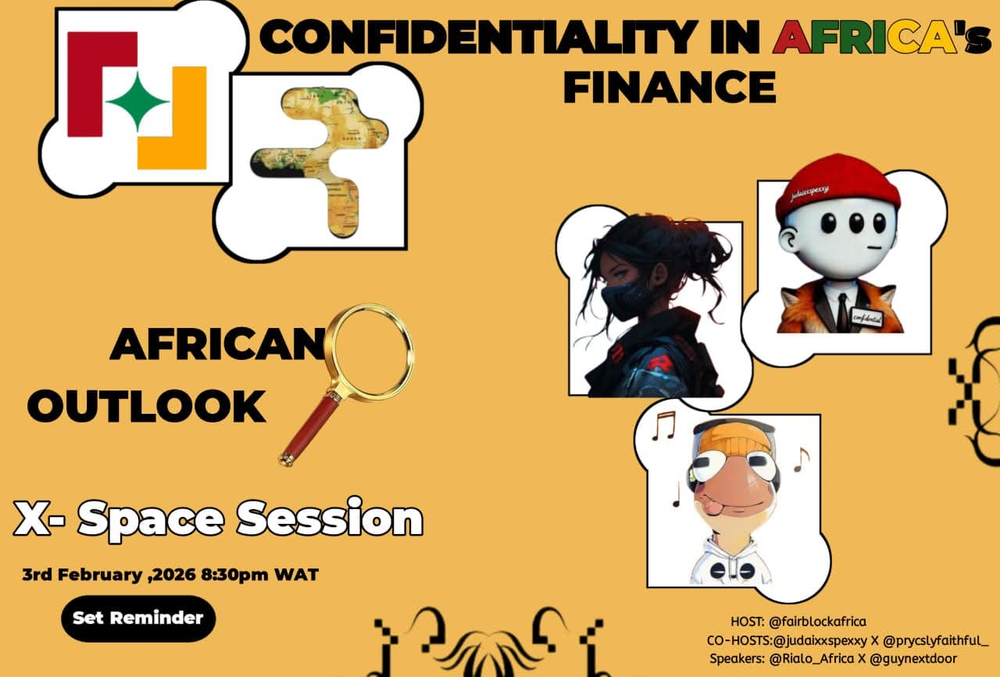

Media expert with over 2 years in the crypto Space — I build and nurture communities that drive real growth in the crypto space.
ABOUT

I'm a Community Manager and Social Media Expert with over 2 years in the crypto space. I started as a Discord contributor, fueled by a passion to learn, scale, and contribute more. Every step has been a lesson, evolving from regional community management to full moderation roles. I focus on authentic engagement, strategic marketing, and events that turn users into loyal advocates. Whether hosting AMAs, organizing IRL meetups, or analyzing growth metrics, I solve real community challenges to help Web3 projects thrive.
SKILLS
COMMUNITY MANAGEMENT
Marketing & Content
Analytics & Strategy
Web3 & Gaming
PROJECTS

Planned and executed in-real-life event to foster connections and visibility.

Organized and hosted live AMAs on X Spaces to educate users on Fairblock's features (e.g., MEV control in crypto). i Drove participation from diverse communities, enhancing project awareness and onboarding new members. Key outcomes: Higher engagement rates and positive feedback, contributing to overall community growth.

Partnered with other communities for joint spaces, leading to cross-promotions and new user influx. Combined with Discord activities and X marketing, this amplified reach and built lasting relationships.
EXPERIENCE
April 2025 — Present
Fairblock Africa
Led community growth from 200 to 1,000+ members via Discord management, onboarding, and activities. Handled X marketing, AMAs, and joint collaborations for enhanced visibility. Onboarded users and moderated discussions to maintain a positive, engaged environment.
2025 — 2026
Fairblock Africa
Managed the official Africa-focused X account for @0xfairblock, planned & posted educational content on privacy tech, stablecoins, and encrypted DeFi use-cases Handled daily engagement: replies, quote-reposts, video interactions, cross-promotions to grow awareness and foster "Fairblock" culture
CONTACT
Open to full-time, freelance, or Web3 collaboration opportunities. Let's connect—DM me on X.